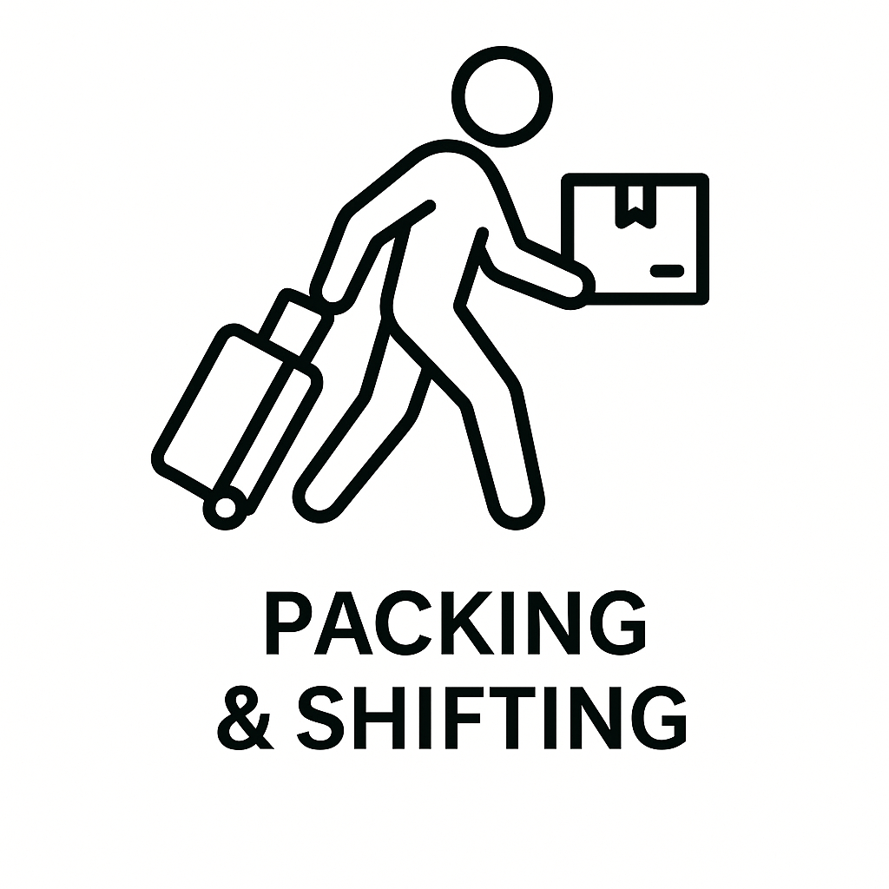

Tyozy
Professional Moving & Cleaning Services in Tampere – 24×7
We promise no hidden fees, honest communication, and a worry-free experience.

Moving

Furniture Pickup

Room Cleaning

Packing & Shifting